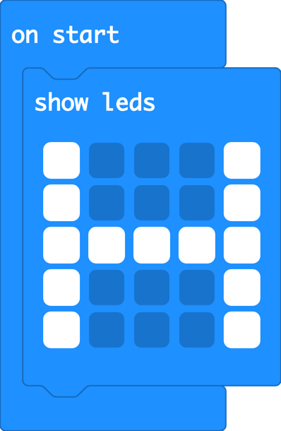
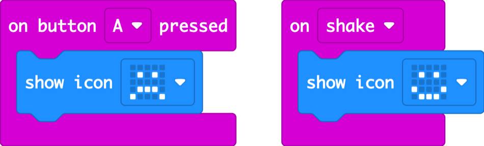
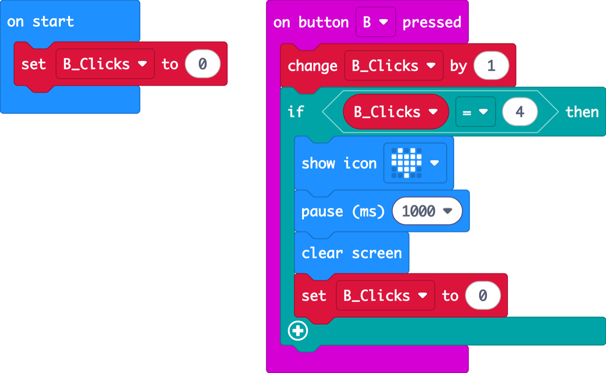
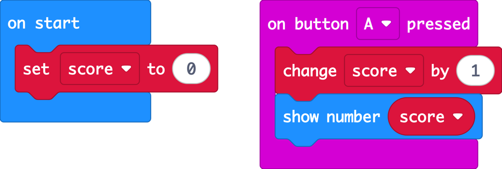
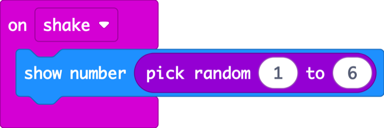

micro:bit with MakeCode
Every lesson so far with the micro:bit, in order. Open a lesson to see what you need, the steps, the blocks and something to try next. All of the building happens at makecode.microbit.org.
1Hello, MakeCodeYour first program: a name badge that plays when you press a button.
You need
- micro:bit
- USB cable
- A laptop with makecode.microbit.org open
Steps
- Open makecode.microbit.org, choose New Project and name it
name-badge. - Drag show leds inside on start. Click each LED you want lit to draw your first letter.
- Plug in the USB cable and press the purple Download button. If a file lands in Downloads, drag it onto the MICROBIT drive. Your letter appears on the board.
- Add one show leds for each letter of your name, with pause (ms) 100 after each. Finish with a blank show leds and pause (ms) 500. That is the gap before the name starts again.
- Wrap all of it in repeat 4 times. A repeat block is a loop: it runs the same blocks again and again.
- Move everything out of on start and into on button A pressed.
- Press Share, then Publish project, and copy the link. Publishing is how you hand work in.
The blocks

What happens
Press A and your name plays across the LEDs four times, with a short gap between each run.
The idea. The button is the input, the loop is the process and the LEDs are the output.
Now change it
- Make on button B pressed do something different.
- Make the pauses smaller and smaller. Find the fastest speed you can still read.
- Try show string with your name in it. Work out what it is doing for you.
Documents
2Algorithms 1: making the micro:bit decideEvents, a variable and a condition: show a heart on the fourth press of B.
You need
- micro:bit
- USB cable
- Battery pack
Steps
- Show a happy face when you shake the micro:bit: on shake with show icon inside.
- Show a sad face when you press A: on button A pressed with show icon inside.
- Now the challenge: show a heart when B has been pressed four times. The micro:bit has to remember how many presses there have been, then ask a question about that number.
- In the Variables drawer choose Make a Variable and call it
B Clicks. A variable is a box with a name on it. In on start, put set B Clicks to 0. - Start a new stack: on button B pressed with change B Clicks by 1 inside. Every press adds one to the box.
- Under that, add if … then from the Logic drawer and drop B Clicks = 4 into its gap. This is a condition: a question with only two answers, yes or no.
- Inside the if, show the heart, pause, clear the screen and set B Clicks to 0. Setting it back to 0 lets the count start again.
The blocks


What happens
Three presses of B show nothing. The fourth shows a heart for one second. Four more presses show it again.
The idea. Remembering needs a variable. Checking needs a condition.
Now change it
- Change the 4 to another number and test it.
- Show a different icon on the fourth press.
- Build the Shake Counter: a variable called
Shakesthat goes up by 1 on every shake, and an icon on the third shake.
Documents
3Choosing your gameThe Mini Project begins: pick one game from the Games Menu.
You need
- The Games Menu
- The Criteria A and B sheet
Steps
- Read through the Games Menu. It holds 23 micro:bit games in three levels.
- Pick two games you like and one you will build. For each, write down one strength and one weakness.
- Read the Criteria A and B sheet. It lists the eight pieces of design work you hand in, one for each strand.
- Tell Mr. Rawson which game you have chosen.
What happens
You leave with one game chosen and a reason for choosing it.
Documents
4My Game Design: the design packetSummative A and B. Explain your game and exactly how it works, on paper.
You need
- My Game Design packet
- The Games Menu
- A pencil
Steps
- Work through the eight parts of the packet in order. Each part is labelled with the strand it earns.
- In Part 1, name a real person your game is for.
- Write success criteria that you can see or count, such as the score goes up by 1 for each catch.
- Plan three versions of one game, each using A, B, A+B and shake in a different way.
- Fill in the controls table for your final version. Write not used beside any input your game leaves out.
- Draw your four 5 × 5 screens and write out one round of the game step by step.
What happens
A finished packet that another person could build your game from.
The idea. The packet is marked on how clearly it explains your plan.
Documents
5Building your gameTurn the design packet into a working game in MakeCode.
You need
- Your finished design packet
- micro:bit
- USB cable
Steps
- Open your packet at the controls table and the block list. They are your plan.
- Build one input at a time. Start with button A, download, and test it on the micro:bit.
- Add the next input and test again. Small steps keep the game working the whole way through.
- Most games keep a score or pick something at random. The two patterns below do those jobs.
- Press Share, then Publish project, and post the link in the Google Classroom build thread.
The blocks


What happens
Your game runs on a real micro:bit, and its link is in the build thread.
Now change it
- Add a sound or an icon for winning.
- Add a way to start a new game without unplugging the micro:bit.
6Carousel Play DayPlay each other's games and tell the builder what you noticed.
You need
- micro:bit
- Your game's sharing link
Steps
- Open your own game from its sharing link and download it to your micro:bit.
- Move round the room when Mr. Rawson calls. Play each game you reach.
- Tell the builder the first thing you did when you picked their game up.
- Back at your own game, read what your players noticed and make one change.
- If your game changed, publish it again and post the new link.
What happens
Your game has been played by people who did not build it, and you have one idea to borrow from someone else's.